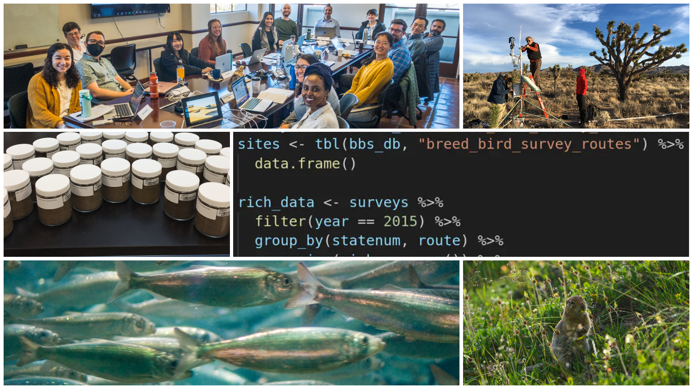

A Course for Collaborative Ecologists

Abstract
In recent decades, ecology has become a more collaborative discipline motivated by the search for generality across ecosystems. At the same time,the availability, quantity, and quality of environmental data have grown rapidly, creating opportunities for re-use of these data in ecological synthesis research. Though synthesis research is complex and demanding, taking an inclusive and collaborative approach to both the scientific process and the data pays dividends throughout the lifetime of a project. This short course is a survey of methods for making ecological synthesis research a “team sport”.
Objectives for learners are to
a. gain project management and data synthesis skills that are immediately useful in a research team setting,
b. develop an end-to-end (conception to publication) plan for collaborative synthesis research and
c. focus on developing their own synthesis projects, whatever stage they are in, with guidance from instructors and peers.Instructors will cover assembling the team, study design, communication, collecting primary data sources, assembly/harmonization of data, managing analytical workflows, and publication of derived datasets and other synthesis products. The course uses real-world examples, demonstrations, and interactive lessons in small groups. Ecologists with synthesis experience will be on hand with seasoned research advice and data tips.
Agenda for 2025-08-10
This agenda is subject to change!
| Timing (PT) | Content |
|---|---|
| 9:00 - 9:30a | Welcome & Introductions |
| 9:30 - 10:30a | Module 1: Starting with Team Science |
| 10:30a - 12:00p | Module 2: Operational Synthesis |
| 12:00 - 1:00p | Break |
| 1:00 - 2:00p | … Module 2, continued … |
| 2:00 - 3:00p | Module 3: Tying it all together |
| 3:00 - 4:00p | Mentoring session… |
Introductions & Icebreaker
Before we begin, we’d love to get a sense for who you all are and why you’re interested in synthesis work! To that end, we’ll take a few minutes and go around the room for introductions. Please include:
- Your name and pronouns
- A 1-sentence summary of your work
- Briefly, why are you interested in synthesis?
Code of Conduct
Briefly: Treat all participants with kindness, respect, and consideration, valuing a diversity of views and opinions. Report unacceptable behavior at (844)-641-4133 or email codeofconduct@esa.org
Note on Course Materials
This short course is being offered for the second time at ESA 2025, and we’ve chosen to assemble these materials as a living website so that we can revisit and improve the materials over time. So, we recommend that you save the link to this site so that you can have easy access to these materials now and as they are refined going forward. Also, much of the content is covered more completely in our year-long synthesis course: Synthesis Skills for Early Career Researchers (SSECR).
If you are a GitHub aficionado, we have deployed this website via GitHub Pages so you could also “star” the website’s repository. Simply click the GitHub octocat logo on the right side of the navbar (at the top of the screen) to be redirected to the GitHub repository underpinning this website.
Finally, we have developed all of this website using Quarto.
Credits
The course and its content were developed by a large team. See the People page to learn more.
Supported by:
Collage photo credits: Jacob Bøtter via Flickr, CC BY-SA 2.0 | Jeremy Yoder via Flickr, CC BY-SA 2.0 | Marco Pfeiffer, CC BY-SA 4.0 | Gabriel De La Rosa, CC BY-SA 4.0 | Weecology lab CC BY 4.0 | NEON (National Ecological Observatory Network)